Incisore meccanico a Tombelle di Vigonovo
Il nome è inciso a rovescio, come sulla testa di un punzone. Premi Dritto e lo stampi sulla pelle.Il dritto è quello che il punzone lascia sulla pelle: leggibile e in positivo.
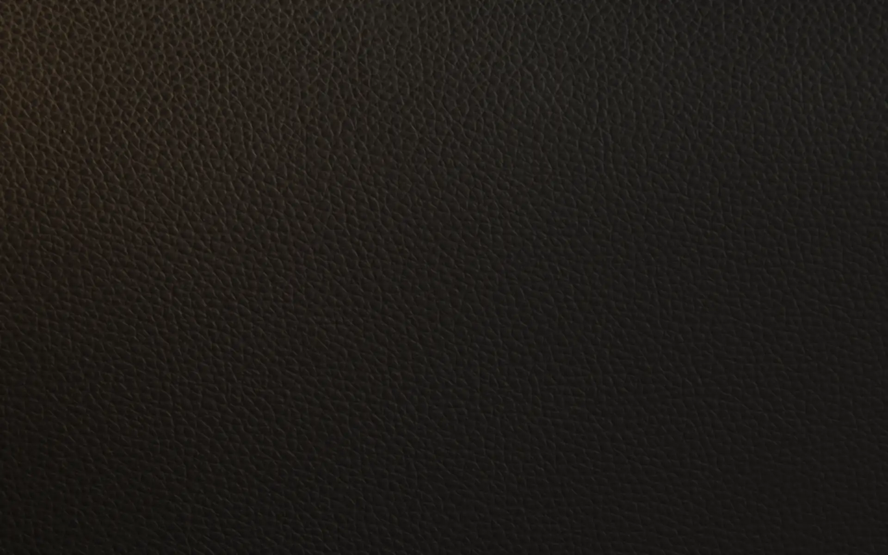
Mario Agnoletto, incisore meccanico
Per chi lavora la pellePunzoni e alfabeti per la stampa su pelle, fustelle, ruote e rulli
Sul prodotto finitoFibbie, morsetti, puntali, copritacchi e tacchi gioiello
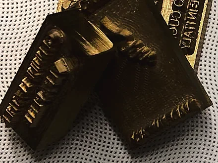
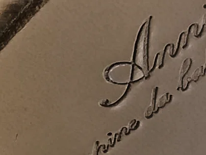
Ogni pezzo esiste due volte
In metallo è in negativo e a specchio; sulla scarpa e sulla borsa diventa dritto e leggibile. Facciamo minuterie e accessori in esclusiva, soprattutto per calzatura e pelletteria: gli attrezzi che lasciano il segno e i pezzi che restano sul prodotto. L'officina l'ha fondata Mario Agnoletto nel 1979.
Punzone e impronta
Stampa su pelle e cuoio
Alfabeti in acciaio e ottone per la personalizzazione, con la grafica fatta da noi, anche in 24 ore.
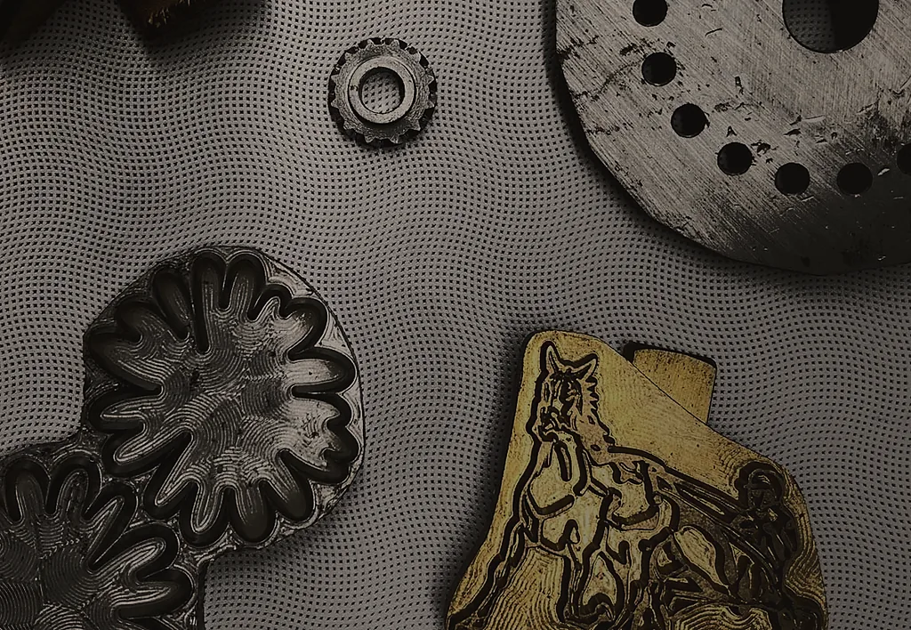
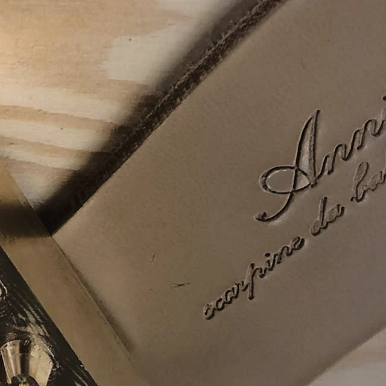
Tacco e scarpa
Tacchi gioiello
Il tacco è un pezzo di metallo che resta a vista: lo facciamo in ottone, acciaio e alluminio.
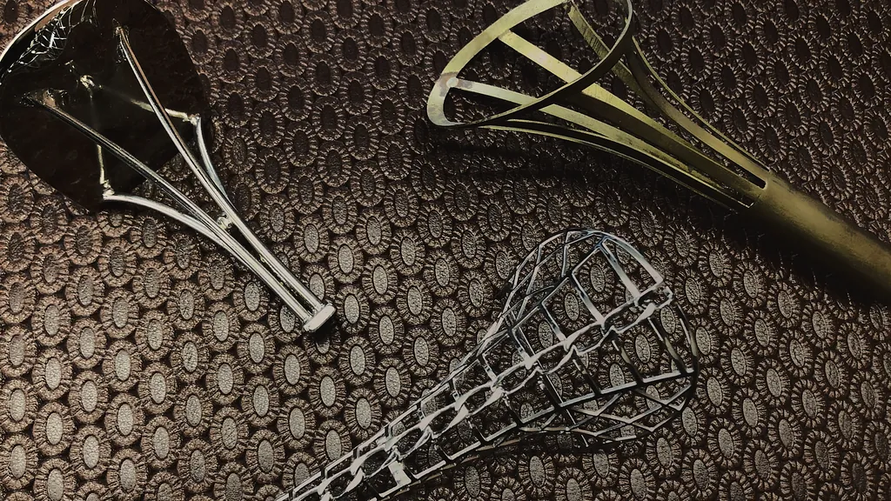
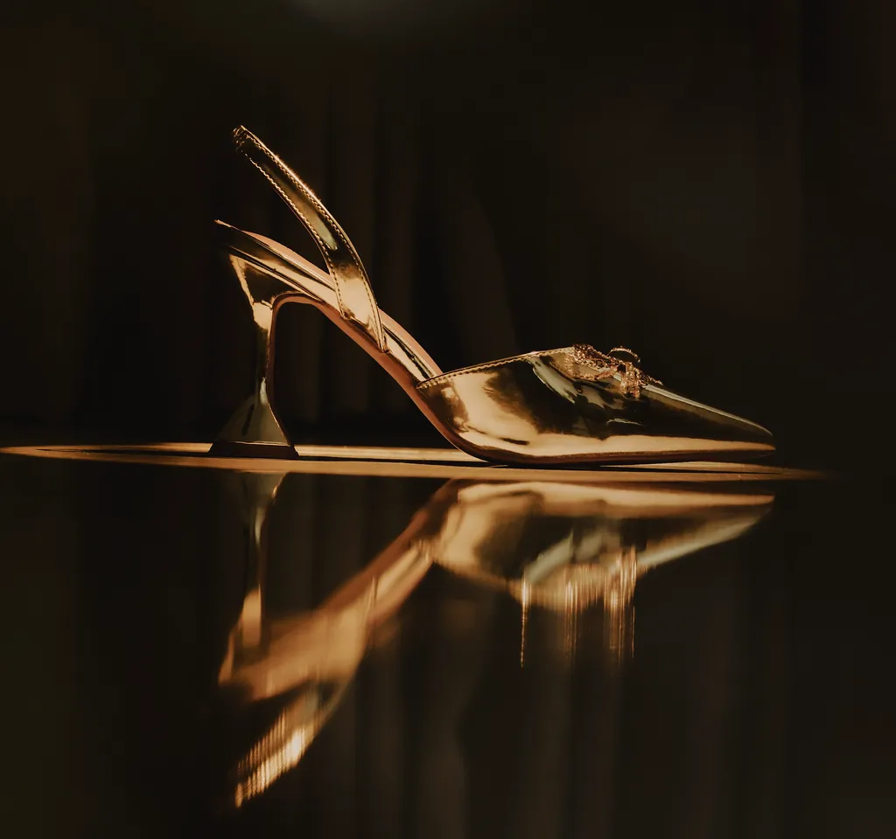
Prototipo e serie
Dall'idea alla serie
Partendo da un'idea ne seguiamo la progettazione, lo sviluppo del prototipo e la produzione in serie.
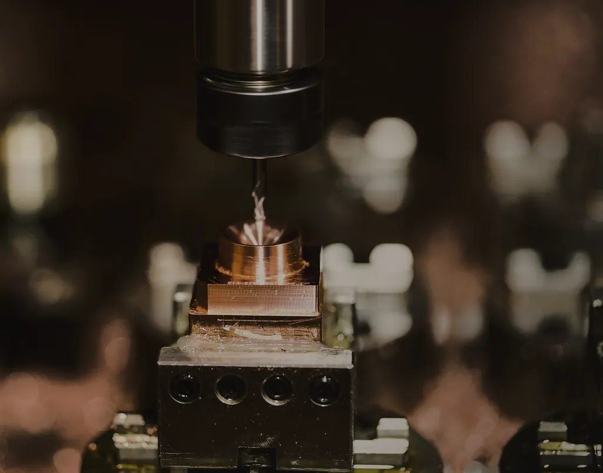
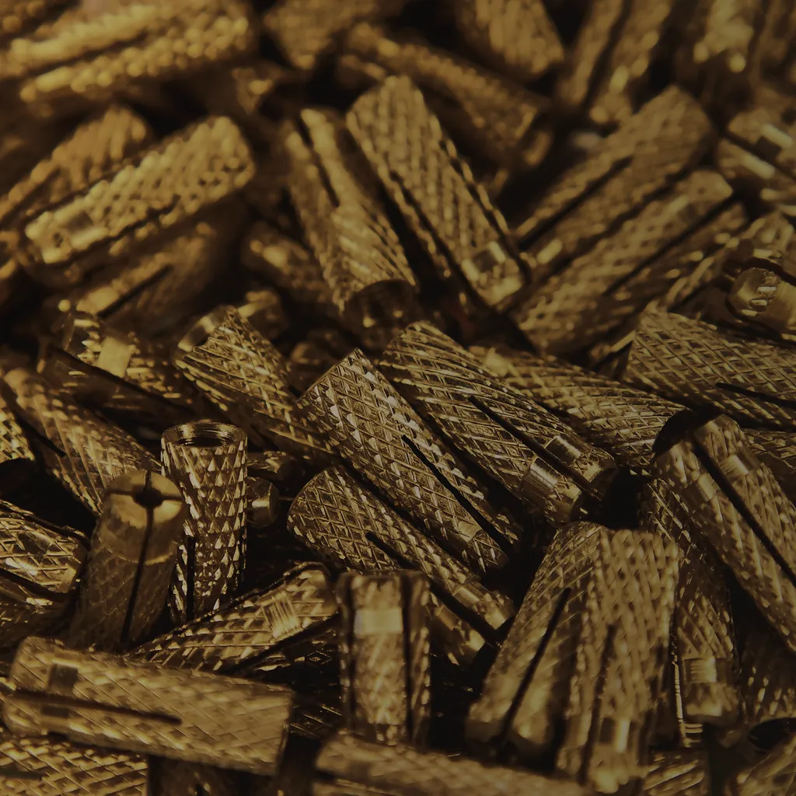
Lavorazioni
Attrezzi per chi lavora la pelle e pezzi in metallo che restano sul prodotto. Lavoriamo zama, ottone, alluminio e acciaio.
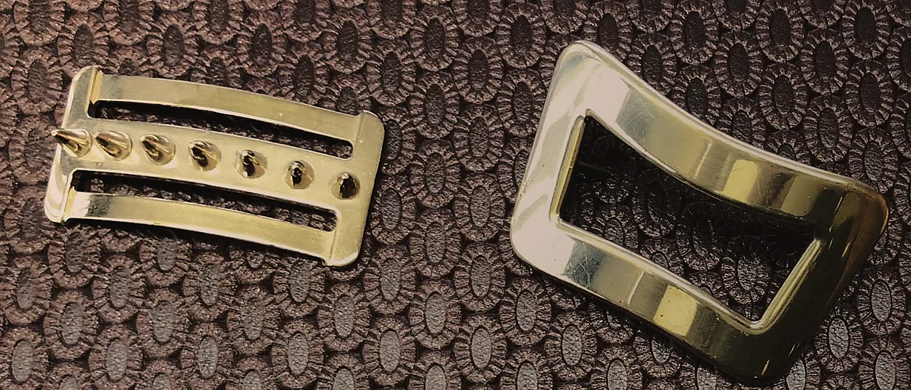
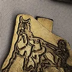
Punzoni e alfabeti
Acciaio, ottonePer la stampa su pelle e cuoio, anche in set di alfabeti per la personalizzazione. Sviluppo della grafica e consegna anche in 24 ore.
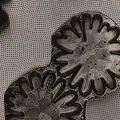
Fustelle
Ottone, alluminio, acciaioPer il taglio e la stampa di pelle, cuoio e tessuto.
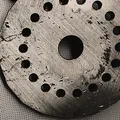
Ruote e rulli
AcciaioRuote in acciaio e rulli, fatti su disegno.
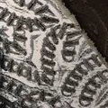
Stampa e foratura
ServizioStampa e foratura su pelle, con un catalogo di lavorazioni pronte.
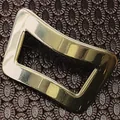
Fibbie e accessori
Ogni finituraFibbie, morsetti, talloni, puntali e copritacchi, con qualsiasi finitura o verniciatura.
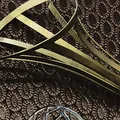
Tacchi gioiello
Ottone, acciaio, alluminioSteli, gabbie e lamelle: il tacco come pezzo a vista, fatto in esclusiva.
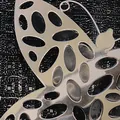
Bigiotteria
Finiture prezioseAnelli, bracciali, spille e pendagli, con applicazioni di cristalli e pietre.
Targhe
Da esposizioneTarghe da esposizione e articoli da vetrina.
Portate l'idea in officina

Per un preventivo mandate il disegno o il logo a info@marioagnoletto.it.
Telefono049 98 00 985
- Dove
- Via dell'Artigianato 18
30030 Tombelle di Vigonovo (VE)
Apri la mappa - Posta
- info@marioagnoletto.it
- PEC
- marioagnoletto@pec.it
- Fax
- 049 50 31 72